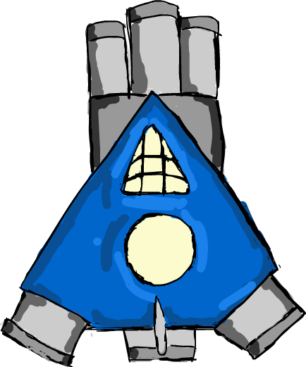
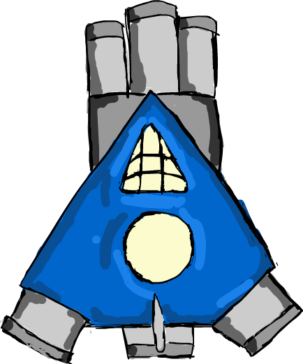

Animasteroids was designed as a part of a two day hackathon hosted by Quiver Games in Vancouver called the Town One Hackathon.The theme of the hackathon was space vehicles. The original concept was pitched by sound designer Max Greening who wanted a shooter game where things came to life instead of destroying things. Sprites for the game were created by myself and then animated by Alex Chow in Unity using a plug in. It was my idea to have three different shot types for three types of asteroid, however it was Mabon Fu’s idea to have the shot types be randomly selected, inspired by the puzzle shooter game puzzel bobble. Myslef and Andrew Liang came up with idea of having the game be a competitive shooter, with Andrew supporting the idea based on a past game jam where a local multiplayer game won.
One of the design challenges was making two different colours of asset and animal for the Red and the Blue player, based on art direction from Max Greening. Assets were created using a basic outline that was coloured in first in one colour then another colour. Assets which did not have an outline had to be traced from an underdrawing and the previous asset paint, such as the seed shot and the crystal shot asset. Asteroids were also made in grey scale, which was another decision made by Max Greening. The idea was for the world to start dull and lifeless and for it to then burst into colour when hit by a bullet.
All following assets were created by myself in Adobe Animate, which was used due to the ease with which it creates scaled and transparent sprite images.

 
